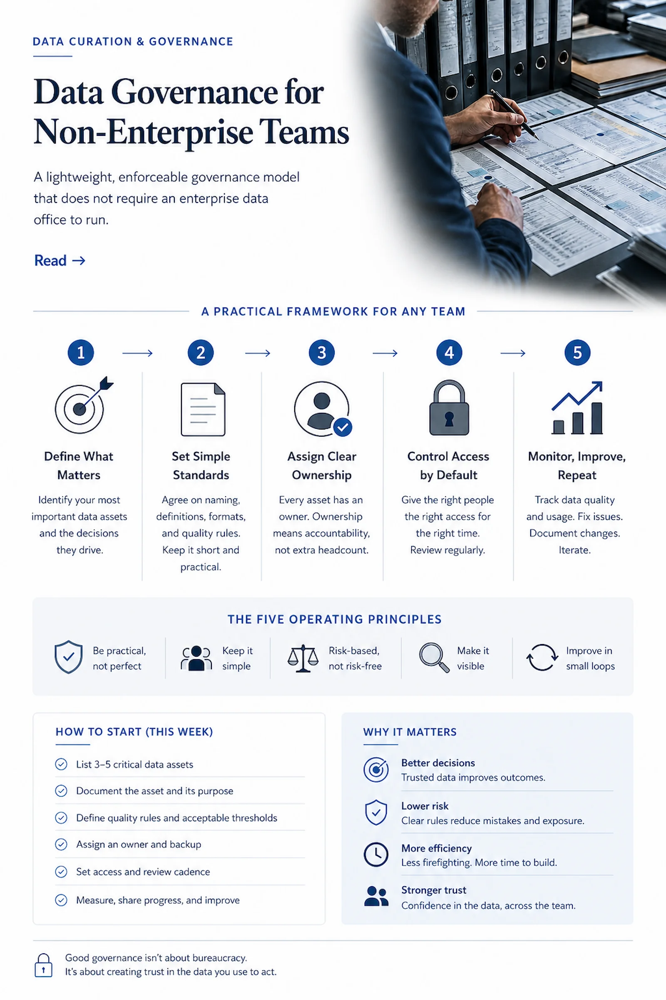

Distribution & Wholesale
AI in Distribution Must Improve Inventory, Demand, and Exception Flow.
Distribution and wholesale companies operate on precision. The business depends on inventory accuracy, demand signals, purchasing discipline, vendor performance, warehouse throughput, pricing control, order fulfillment, customer service, margin visibility, and cash conversion.
AI in Distribution Starts With Inventory, Demand, and Exception Flow
Distribution and wholesale companies depend on inventory accuracy, demand visibility, purchasing discipline, supplier performance, warehouse execution, pricing controls, and customer service. Small data issues compound quickly across purchasing, stocking, fulfillment, invoicing, and margin management.
FAA helps distributors improve the data and workflows behind inventory, demand planning, purchasing, warehouse operations, customer commitments, and reporting before applying AI. AI can support faster decisions, but only when the operating foundation is controlled.
AI can help with demand forecasting, replenishment, inventory exception management, customer service, pricing analysis, purchasing support, and operational reporting. But if item data, supplier records, inventory balances, pricing rules, and exception workflows are inconsistent, AI will amplify the wrong signals.
- Demand forecasting
- Replenishment
- Inventory exceptions
- Pricing analysis
- Purchasing support
- Customer service
- Warehouse visibility
- Management reporting
Where the Methodology Meets Distribution & Wholesale.
When those areas are disconnected, the cost shows up quickly. Inventory is either too high, too low, or in the wrong place. Buyers make decisions from incomplete demand data. Customer service chases status manually. Finance struggles to understand margin by customer, product, channel, or location. Operations spends too much time handling exceptions that should have been designed into the workflow.
AI can help, but only if the operating system underneath it is reliable.
Data First. Workflow Second. AI Third.
FAA evaluates this industry through its core methodology — in order.
Data Curation & Governance
Distribution businesses need governed data across customers, items, vendors, pricing, inventory, demand history, purchase orders, sales orders, warehouses, substitutions, rebates, freight, returns, credits, and service levels. If this data is inconsistent, AI cannot produce dependable recommendations.
Item master data is especially important. Poor item data affects purchasing, inventory, pricing, warehouse operations, customer communication, and reporting. Customer and pricing data are equally important because margin leakage often hides inside discounts, freight treatment, rebates, substitutions, credits, and exceptions.
FAA evaluates where data is trusted, where it is duplicated, where teams work outside the system, and where reporting does not reflect operational reality.
Workflow Optimization
Distribution workflows often involve high transaction volume and frequent exceptions. FAA reviews order intake, purchasing, replenishment, warehouse movement, picking, packing, shipping, returns, credits, customer service, vendor follow-up, and billing.
The objective is to identify where work slows down, where manual intervention is overused, where exceptions are not classified properly, and where data issues create rework.
This matters directly to throughput and cash flow. A cleaner order-to-cash workflow improves fulfillment speed and billing accuracy. Better replenishment workflows reduce stockouts and excess inventory. Stronger exception handling improves customer service without adding unnecessary labor.
AI Design & Implementation
AI can support distribution in practical ways. It may help classify customer requests, identify demand anomalies, summarize vendor issues, flag inventory exceptions, support purchasing review, extract data from documents, draft customer updates, identify pricing inconsistencies, or generate operational summaries.
But AI should not become an unmanaged layer on top of weak inventory discipline or inconsistent pricing rules. FAA designs AI around clear workflows, governed data, human review points, and measurable outcomes.
The goal is not to make the distributor look more digital. The goal is to improve operating performance.
Tied to Margin, Throughput, Cycle Time, Cash Flow, Risk, and Visibility.
What FAA delivers, by audience.
Clearer visibility into growth constraints, service issues, and margin performance.
Better margin control, cleaner working capital visibility, reduced leakage, and improved cash conversion.
Improved throughput, fewer manual exceptions, cleaner inventory movement, and faster order cycle time.
A structured approach to connecting ERP, WMS, CRM, supplier data, customer portals, and AI-enabled workflows.
Related Thinking
Data: The Constraint You Can’t Outrun
Why mid-market AI initiatives stall on data quality, ownership, and structure before any model is involved.
Read →
InfographicData Governance for Non-Enterprise Teams
A lightweight, enforceable governance model for mid-market teams that need trusted data without enterprise data-office overhead.
Read →Where Agents Earn Their Keep — and Where They Don’t
A decision framework grounded in margin, throughput, cycle time, and risk. Built for operators making capital decisions, not for teams chasing demos.
Read →Distribution companies win through disciplined flow.
AI earns its place when it improves inventory control, demand visibility, exception management, and customer execution.